Turbocharging PiPNN for Proximity and k-NN Graph Building
VecDB @ VLDB 2026
1 University of Maryland · 2 Carnegie Mellon University · 3 Google Research | VecDB @ VLDB 2026
TL;DR
CPU — 4–8× faster than quantized Vamana (geomean 5.9×); 40.7× faster than unquantized Vamana
GPU — no quantization: 8.1× over Jasper, 16.3× over CAGRA; with RSQ8: 13.3× / 27×
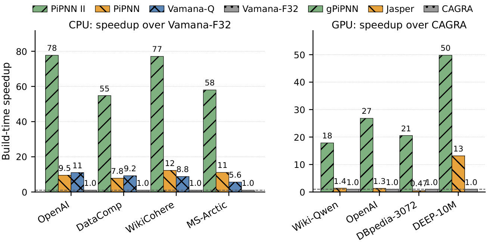
better
Same index quality — and billion-point indexes built in about 10 minutes on one CPU machine.
Outline
Background — graph indexes, why build time matters, the search bottleneck.
PiPNN (KDD 2026) — search-free construction: partition · compare locally · prune online.
This paper — Faster Implementation and k-NN graphs:
- fast top-k kernels on CPU: quantize, then fuse
- GPiPNN: a GPU-native rebuild, licensed by history-independence
- k-NN graphs straight from the leaves
Part I Background
Nearest neighbor search
Must Approximate for Large Datasets
Graph indexes: fast to query, slow to build
Points are vertices; edges connect near (and navigationally useful) points; a query walks the graph greedily toward its target.
Pros — state-of-the-art QPS at high recall · any distance: L2, cosine, inner product
Cons — slow to build · space overhead
This talk: build time
Why build time matters
- Indexes are rebuilt periodically
- New datasets mean parameter tuning
- Scalability issues for billion scale.
- ANNS is a subroutine — clustering, k-NN graph construction, etc.
The search bottleneck
- Vamana · HNSW · NSG all search the partial index for candidates, then prune.
- Build time is dominated by search:
| Vamana build | Search (s) | Prune (s) | Search share |
|---|---|---|---|
| OpenAI-ArXiv | 342.3 | 13.4 | 96% |
| MS-SPACEV | 474.1 | 282.1 | 63% |
| Wikipedia-Cohere | 4663.1 | 385.6 | 92% |
On average, ≈ 84% of build time is spent searching.
- Fails to leverage that the problem is offline.
Goal: generate good candidates without searching the index
Part II PiPNN: search-free construction
PiPNN: Ultra-Scalable Graph-Based Nearest Neighbor Indexing — KDD 2026
PiPNN, end to end
PiPNN(X, params): G ← (X, ∅) B ← Partition(X) ▸ overlapping leaves for leaf b ∈ B in parallel: Eb ← Pick(b) ▸ dense in-leaf k-NN candidates G.PruneAndAddEdges(Eb) ▸ per-point online prune if params.final_prune: for x ∈ X in parallel: RobustPrune(x) return G
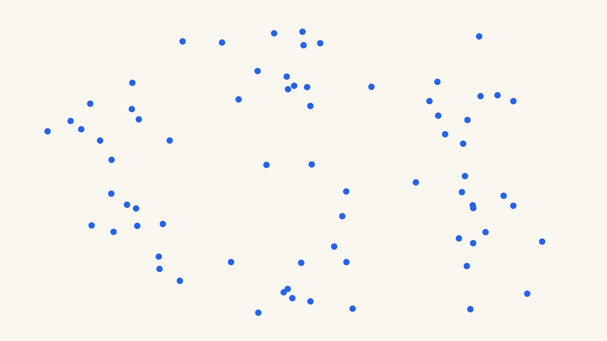


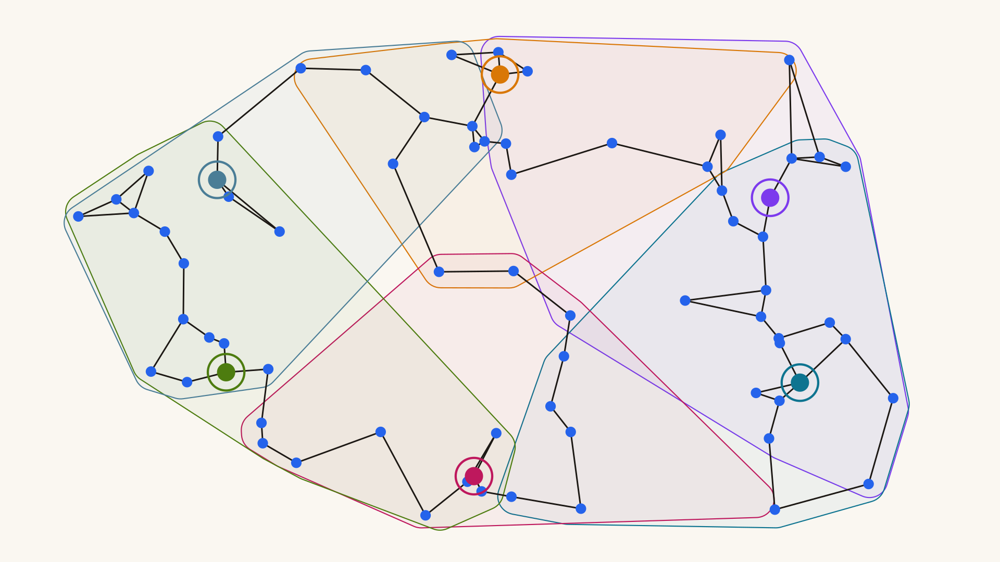
Partitioning: overlapping leaves by ball carving
- Ball carving — sample a random subset of points as partition leaders (the ringed dots); assign every point to its closest leader; any cell larger than C_{\max} (typically 1024) recurses.
- Overlap via fanout — assign each point to its top-f closest leaders, so close neighbors are not split across a cell boundary.
- Multi-level fanout — make f a function of depth (e.g. 10 at the top, 3 below).
Leader assignment is a top-k problem: score every point against the leaders, keep its top-f.

Picking from leaves
- Inside a leaf, compare everything to everything.
- Each point keeps its two nearest co-members — directed 2-NN edges.
- Symmetrize — add back-edges.
- Two per leaf is enough.
A top-k problem: score every pair, keep each point’s k nearest.
HashPrune: an online, order-independent prune
- The union of the leaf graphs is dense and redundant — and the classical prune (RobustPrune) is offline: complete candidate set, globally sorted.
- HashPrune — per source point p: hash each candidate’s residual direction c - p; on a bucket collision, keep the nearer; when full, evict the farthest. Online, in bounded memory.
- Theorem. The final adjacency list is independent of insertion order. With fixed seeds, PiPNN is deterministic.
Part III Turbocharging PiPNN
This paper — fast top-k on CPU and GPU, and k-NN graphs straight from the leaves
Top-k is the majority of the work

- Partitioning: each point finds its top-f leaders.
- Leaf building: each point finds its top-2 inside the leaf.
Same kernel twice: score a dense block, keep the top k.
CPU: quantize, then fuse the top-k
- Quantize so the scores run on integer SIMD dot products — byte codes needed for VNNI; less memory traffic too.
- We use TurboQuant variant (fast Walsh-Hadamard rotation + Lloyd-Max Codebook) - could use others
- Fuse scoring with top-k selection — the distance matrix is never materialized.
The kernel implementation dominates
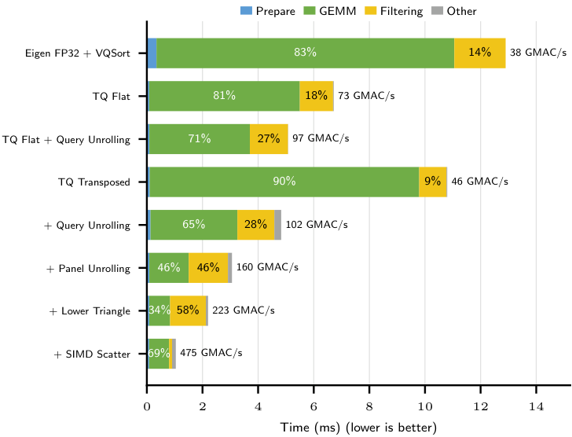
Implementation of top-k kernels has highest impact on running time
Same leaf, same core: 12.90 ms → 1.04 ms — 12.4× from the kernel alone.
CPU build times
4–8× faster than quantized Vamana (geomean 5.9×); 40.7× faster than unquantized Vamana; up to 8× faster than the original PiPNN.
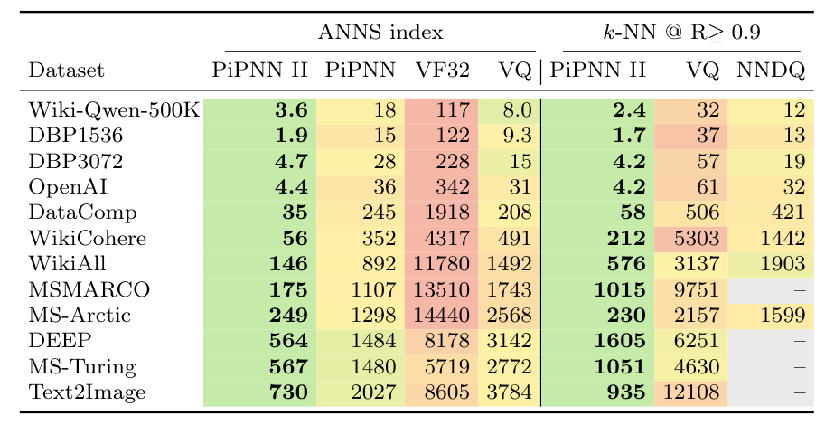
Seconds; green = fastest per row. VF32 / VQ = unquantized / quantized Vamana; NNDQ = PyNNDescent. Right half: direct 10-NN graphs — revisited at the end.
Index quality preserved
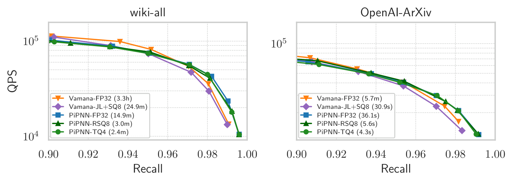
better
Quantized PiPNN matches FP32 PiPNN’s QPS at every recall: geomean ratios 0.98 (TQ4) and 0.99 (RSQ8).
GPiPNN: keep the tensor cores fed
- Regularize the leaves — cap and pack them — so every leaf is one contiguous segment of a dense slab and no block straggles.
- Feed asynchronously — TMA streams tiles into a shared-memory ring while the tensor cores consume the current stripe.
- Score with WGMMA, select in registers — the score tile is never written to memory.
Everything else becomes a sort — HashPrune included: sort candidates by owner and distance, merge once, no locks. Legal because HashPrune is order-independent.
GPU build times
No quantization anywhere: geomean 8.1× over Jasper, 16.3× over CAGRA. With RSQ8: 13.3× and 27×, up to 43.7× and 50×.

Unquantized CAGRA builds its initial graph with NN-Descent, which is L2-only — hence the “–” cells on the MIPS datasets.
GPU index quality

Same picture as on CPU: the curves overlap. The speedups are build-time only.
Direct k-NN graphs: drop the prunes
Keep partition + pick: the leaf top-k rows are the k-NN graph.
Direct k-NN graphs: results
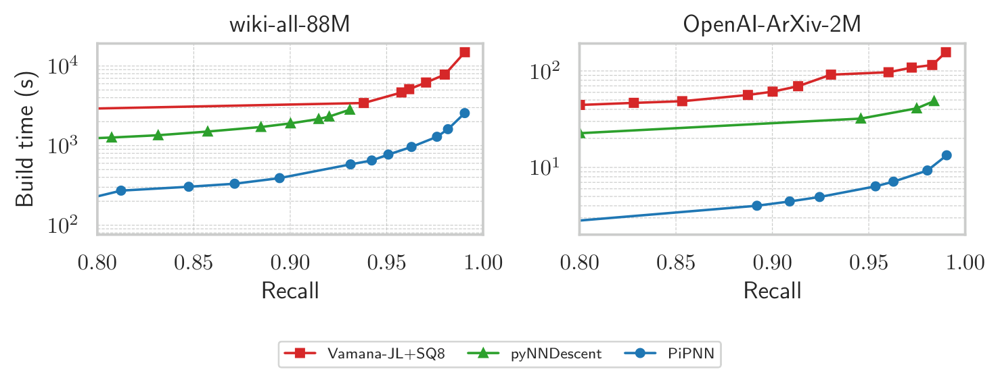
better
10-NN graphs at recall ≥ 0.9: 4–10× faster than PyNNDescent, 5–20× than Vamana (geomeans 5.9× / 10.3×).
Up to 13× on CPU and 6.6× on GPU over the prior best; a billion-scale 10-NN graph in under 16 minutes.
Summary
- Remove search from construction: what remains is top-k.
- Fast top-k on CPU — quantize, then fuse: 4–8× over quantized Vamana.
- GPiPNN — history-independence lets us sort instead of lock: 8.1× / 16.3× over Jasper / CAGRA.
- Direct k-NN graphs from the leaves: billion-scale 10-NN in under 16 minutes.
- Next: beyond a single machine, and other accelerators.
Thank you — questions?
Paper · openreview.net/forum?id=8GzbSQMrLA
Code · github.com/ParAlg/PiPNN
Graduating in May · trubel@umd.edu
Backup: GPU baselines — the tuning protocol
- For each (method, dataset) pair we swept parameters and kept one configuration: for the ANNS index, the fastest build whose QPS-recall curve matches an unquantized ParlayANN-Vamana graph by area under the curve; for k-NN graphs, the fastest build reaching graph recall ≥ 0.9 (5,000 seeded points against brute-force top-10; “–” if nothing clears the floor).
- CAGRA was swept over graph degree ∈ {32, 48, 64} × intermediate degree ∈ {64, 128, 192}; all other methods ran at library defaults.
- RaBitQ was not used during queries for any method, including Jasper — no method gets a query-side quantization advantage.
- Asymmetry we should state plainly: on the k-NN task CAGRA is fixed at 32/128 on every dataset, while GPiPNN’s k-NN parameters are swept per dataset.
Backup: the 100M CAGRA outlier
- CAGRA’s DEEP-100M build takes 3940 s — about 4.7× slower than the 825.6 s Jasper reports for CAGRA on the same dataset and degree, on a slower A100.
- We reproduced the figure on our own H100 (3868 s) and traced it to the cuVS 25.04 large-scale CAGRA graph-build path, not the dataset.
- GPiPNN builds both 100M graphs (DEEP, MS-Turing) in ≈ 20 s — 5.4× and 8.2× faster than Jasper — but the 100M rows are excluded from the headline aggregates rather than reported against an unreliable CAGRA baseline.
Backup: H100 in two instructions
- WGMMA — a warpgroup (128 threads) collectively issues one tensor-core matrix multiply: a 64 × 128 tile, advanced 32 contraction-bytes per step, int8 × int8 → int32 — the GPU sibling of
vpdpbusd. - TMA — the tensor memory accelerator copies whole tiles between global and shared memory from a descriptor (base, shape, stride, swizzle), instead of per-thread address arithmetic; it stages the database slab without consuming warp registers.
Goal: overlap computation and memory movement — keep the tensor cores busy.
Backup: what one step feeds — CPU vs GPU
CPU — AVX-512 VNNI vpdpbusd |
GPU — Hopper wgmma |
|
|---|---|---|
| One instruction | 1 query × 16 points × 4 dims | 64 queries × 128 points × 32 dims |
| Per dimension step (loop body) | every 4 dims: 8 queries × 4 panels → 32 instructions into 32 independent accumulators | every 64 dims: 2 instructions into one accumulator, then wait |
| Feeding the dimensions | L1 + hardware prefetch; queries pre-broadcast | TMA → 4-stage shared-memory ring; producer / consumer warps |
| Select | fused per block; two top-2 trackers; lower triangle | per finished tile, in registers; 4-lane shuffle merge; full square |
Same shape on both: score a tile, select in registers, never store the scores.
Backup: speed of light on the H100
- GPiPNN’s leaf-2-NN kernel is L2-cache-bandwidth-limited at d ≥ 1536 (OpenAI-2M, DBpedia-3072): 82–95% of unified memory throughput, while DRAM stays at 37–52% and the SM pipeline holds at 46–49% — below NCU’s 60% compute-bound threshold.
Backup: the quantization codes
- Rotate first, then quantize per coordinate — no coordinate is special afterwards.
- RSQ8 — 8-bit rotated scalar quantization.
- TQ4 — TurboQuant’s 4-bit Lloyd–Max codebook on rotated coordinates, with its inner-product estimator.
- Our TQ4 variant: replaces the residual (QJL) sketch with an extra codebook bit plus a per-vector rescale; 4-bit codes decode to int8 in-register (
vpshufb).
Backup: the template is the contribution
Distance = integer inner product + a small per-vector correction. Anything fitting it rides the same kernels — VNNI on CPU, WGMMA on GPU.
- RaBitQ, DRIVE and EDEN all fit the same template — distance = integer inner product + a small per-vector correction — and could be substituted for our quantizer without touching the kernels.
- We picked the TurboQuant variant for fast, data-oblivious O(d \log d) encoding and because its decoded codes map cleanly onto integer dot-product instructions: VNNI on CPU, WGMMA on GPU.
- In the GPU comparisons, RaBitQ is disabled at query time for every method, Jasper included.
Backup: the CPU kernel — quantize, then fuse
- Quantize the vectors — TQ4 (TurboQuant) or RSQ8: a distance becomes an integer dot product plus a small per-vector correction.
- Fuse scoring with selection: each score goes straight into the top-k; the distance matrix is never materialized.
- Quality holds: QPS ratios 0.98 (TQ4) / 0.99 (RSQ8) vs. FP32 at matched recall.
Backup: score with one instruction
vpdpbusd (AVX-512 VNNI) does 64 multiply-accumulates per instruction — 16 int32 lanes × 4 byte pairs — decoded quantized codes in, int32 scores out, in registers.
Backup: the modern recipe, in two clips
For each point:
- Candidate generation — search the partial index.
- Prune — choose directionally diverse edges.
Vamana (DiskANN) · HNSW · NSG — all instances of this recipe.
Backup: Beam search
BeamSearch(G, q, source s, beam width L):
B ← {s} ▸ beam: best L points seen
V ← ∅ ▸ visited
while B ∖ V ≠ ∅:
p ← argminu ∈ B∖V D(u, q)
B ← B ∪ Neighbors(p) ▸ score every neighbor vs. q
V ← V ∪ {p}
if |B| > L: B ← closest L points to q in B
return B
Irregular accesses lead to poor cache performance.
Backup: RobustPrune
RobustPrune(p, C, α) Sort C by D(p,\cdot). Repeat until |N(p)| = R or C is empty: move the nearest remaining y into N(p), then delete every remaining z with \alpha \cdot D(y,z) \;<\; D(p,z), \qquad \alpha \ge 1. Introduced in DiskANN (Subramanya et al., NeurIPS ’19); \alpha = 1 is the classical RNG condition.
Backup: IVF — cluster, then scan
Partition the points into clusters. A query probes its nearest centroids and exhaustively scans every point inside them.
Pros — fast to build · contiguous, SIMD-friendly scans
Cons — high dimensions force many probes per query
Backup: the pruning problem
- The union of all leaf graphs is dense — and much of it is redundant: near-parallel edges, plus back-edges piling into hubs.
- We must prune — but the classical prune (RobustPrune) is offline: complete candidate set, globally sorted; buffering the parallel streams is slow and memory-hungry.
Needed: an online prune in bounded memory.
Backup: HashPrune — the insertion loop
Per source point p: hash each candidate’s residual direction c - p. On a bucket collision, keep the nearer; when full, evict the farthest.
Online, in bounded memory: the buckets do the diversity job of RobustPrune’s global sort.
Backup: HashPrune is history-independent
Theorem. For a fixed hash function h_p, candidate set C, and reservoir size \ell, the final adjacency list produced by HashPrune is unique — independent of the insertion order of candidates in C.
Corollary. Fixing the random seeds for partitioning, PiPNN is deterministic — the same index on every build, regardless of thread scheduling.
Backup: history-independence — proof sketch
Theorem For a fixed hash function h_p, candidate set C, and reservoir size \ell, the final adjacency list produced by HashPrune is unique — independent of the insertion order of candidates in C.
Proof sketch (i) The collision rule means bucket b ends up holding the D(p,\cdot)-minimum among candidates hashing to b. (ii) The eviction rule always removes the farthest, so the reservoir ends as the \ell nearest bucket winners. Both sets are determined by (h_p, C, \ell) alone — order appears nowhere. \square Full proof: the paper’s full version (arXiv).
Backup: PiPNN I — same quality, an order of magnitude faster
Up to 11.6× faster than Vamana and 12.9× faster than HNSW at state-of-the-art index quality (average speedups 6.32× and 10.4×); billion-scale indexes in under 20 minutes on one machine.

Backup: PiPNN I quality — billion-scale datasets
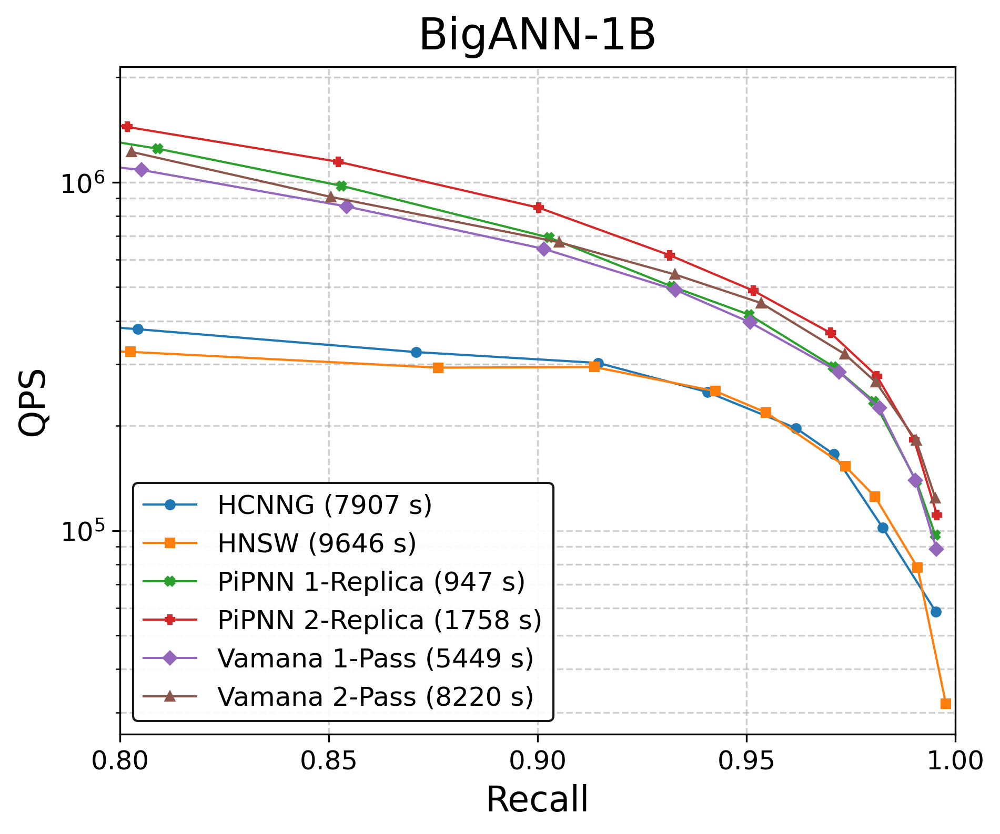

QPS-vs-recall against the search-built baselines — build times in the legend.
Backup: PiPNN I quality — high-dimensional embeddings


Wikipedia-Cohere at 768d, OpenAI-ArXiv at 1536d — same picture.
Backup: why PiPNN I was already fast — hardware counters
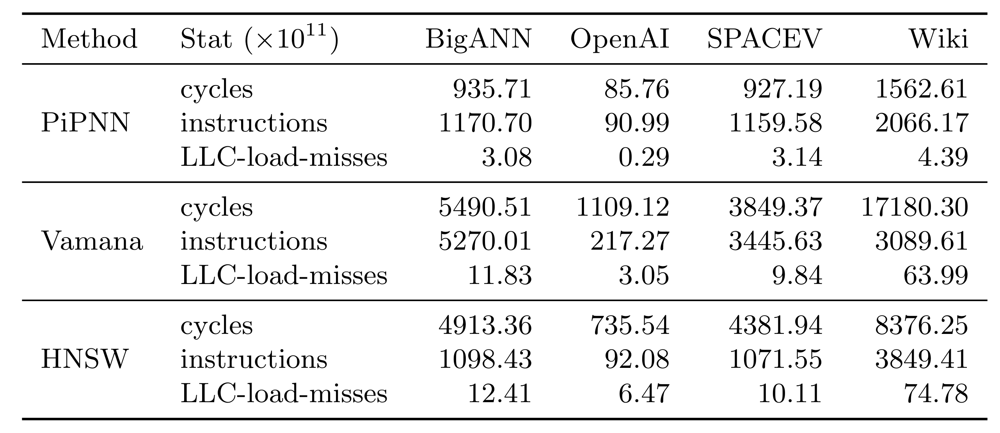
Better locality → superior instructions per cycle: 1.26 vs. 0.44 (Vamana) and 0.33 (HNSW).
Backup: where CPU build time goes now

Backup: AssignLeaders — top-f against a small leader set
- Partitioning’s kernel is asymmetric: every point scores against a small leader set — so pretranspose the leaders once and stream cache-sized chunks of points through.
- The fanout schedule sets k: top-10 at the root, top-3 below, top-1 deeper.
- Top-1 is an in-register argmin sweep. Top-3 / top-10 use displacement sort: each SIMD lane tracks its own top-k in k registers, and the horizontal merge is deferred to the very end.
- k = 3 stays entirely in registers; k = 10 spills to L1 — affordable, because only the root scores each point once while lower levels score every replica.
Backup: the leaf kernel — a fused self-join
- Inside a leaf every point is both query and database — so score only the lower triangle: half the distance work.
- Each score updates two top-2 trackers at once: the query row’s (in registers) and the database point’s (loaded once per panel, updated in-register, stored back).
- Lane-parallel top-2 insertion runs in 6 blends; masking retires self-pairs and padding.
- The output is leaf-2NN: each member’s two nearest co-members, symmetrized into the candidate stream HashPrune absorbs.
Backup: the kernel ablation, stage by stage
The fused, quantized leaf-2-NN kernel takes leaf scoring from 12.90 ms to 1.04 ms — 12.4×.
Backup: the v1 leaf kernel (Eigen + Highway)
LeafKNN(leaf b, k): ▸ PiPNN I (v1) leaf kernel
D ← all-pairs distances in b ▸ Eigen symmetric GEMM: P·Pᵀ + norms
for point i ∈ b:
pack (D[i,j], j) into 64-bit keys
k nearest ← VQPartialSort(keys, k) ▸ Highway SIMD
return bi-directed edges Eb
- Per-row top-k by vectorized partial sort — distance and index bit-packed into one 64-bit key.
- This is exactly the kernel the fused self-join replaces — and the reason the distance matrix used to exist.
Backup: PiPNN I’s leaf-kernel ablation (Eigen + Highway)

better
Implementation of top-k kernels has highest impact on running time
Backup: why PiPNN doesn’t just port to the GPU
- Recursive partitioning — a dynamic tree of dependent launches instead of flat bulk passes.
- Skewed bucket sizes — a launch finishes when its slowest block does: oversized leaves stall the grid while near-empty ones idle SMs.
- Lock-based HashPrune — thousands of concurrent inserts contending on per-point reservoirs serialize on locks.
Fixes: flatten · regularize · segment · sort-and-merge.
Backup: flatten — recursion becomes two sorted rounds
Sample leaders, assign each point to its f nearest, radix-sort by leader key — every bucket becomes a contiguous run. Two rounds suffice (f_0 = 8, then f_1 = 4).
Backup: regularize bucket sizes
- After sorting, run-length-encode the bucket sizes, then split the oversized and merge the undersized toward a target of ≈ 1024 points.
- What it buys: every leaf now fits one fixed tile shape — a single kernel serves all of them, with no per-size specialization and no relaunches.
- The slowest-block problem dissolves: uniform buckets mean no straggler stalls the grid.
Backup: one fused, segmented top-k kernel
- Every leaf is a segment of the same launch — one kernel scores them all.
- Inside: producer warps TMA-stage the next 32-byte stripe into shared memory while WGMMA consumes the current one — the copy hides under the math, one matmul group always in flight.
- Scores drain from accumulators straight into register top-k, merged at the end (butterfly): the score matrix never exists in global memory.
The CPU fusion, at warpgroup scale.
Backup: sort-and-merge HashPrune, step by step
- Thousands of concurrent inserts on per-point reservoirs would serialize on locks — so emit now, resolve later: write two direction-records per candidate edge into a buffer.
- Radix-sort the batch by owner and distance, then realize every reservoir in one sequential merge sweep.
- The license is the theorem: HashPrune is order-free, so a sorted batch and a stream of locked inserts land on the same final reservoir.
Backup: any order, same reservoir
Legal because HashPrune is history-independent: the sorted batch lands on the same final reservoir as a stream of locked inserts.
Backup: DirectEdgePrune — prune only what was witnessed
- One search-shaped pass remains: the final RobustPrune wants candidate-to-candidate distances the build never computed — recomputing them is a scatter-gather pass.
- The fix: prune using already-witnessed distances only. The error is one-sided — it can only miss prunes, never over-prune.
- The trade: graphs come out 30–58% denser at comparable query quality, and GPU build time drops by up to 1.4×.
Backup: GPU direct k-NN graphs
Geomean speedups: 7.12× over Jasper, 2.91× over NN-Descent, 9.84× over CAGRA, 49.80× over IVF-PQ8.

Backup: direct mode, visually
Drop HashPrune and the final prune: the leaves already witnessed the neighbors, so k-NN rows fill straight from the leaf candidates — no reservoirs, no navigable index, no query pass.
Backup: full build tables
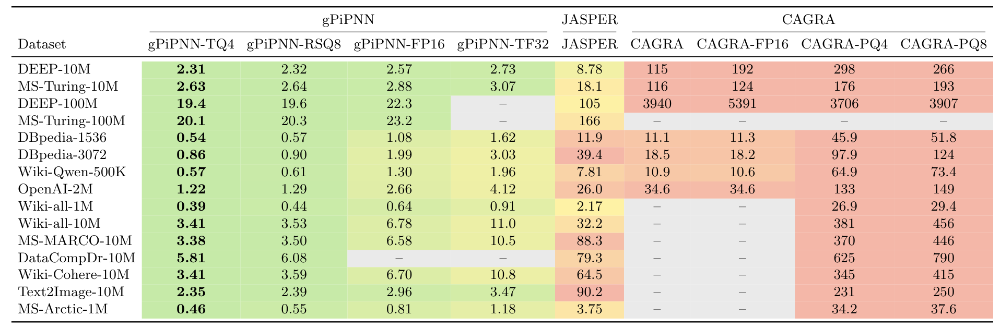

Backup: evaluation scope
- Twelve datasets across text, image and text-to-image modalities; up to one billion points on CPU and one hundred million on GPU.
- Machines — CPU: GCP c4-highmem-288 (288 vCPU, 2.2 TB, Granite Rapids) for billion-scale, c3-highmem-192 (192 vCPU, 1.5 TB, Sapphire Rapids) otherwise; GPU: a3-highgpu-1g, one NVIDIA H100 80 GB SXM5.
- Baselines — CPU: Vamana/ParlayANN (FP32), SQ8-quantized Vamana, PyNNDescent (SQ8, k-NN only); GPU: CAGRA (incl. FP16/PQ variants), Jasper, cuVS NN-Descent, cuVS IVF-PQ8.
- GPU baseline runs are capped below full scale on most datasets (10M slices; 1M for MS-Arctic) because the baselines do not complete at full scale on one 80 GB H100.
Backup: multi-level fanout beats replication


Multi-level fanout builds 1.35–2.5× faster than replication at the same quality.
Backup: dense ball carving works best
Partitioning strategies compared, rest of the pipeline fixed — dense (k-)ball carving wins:
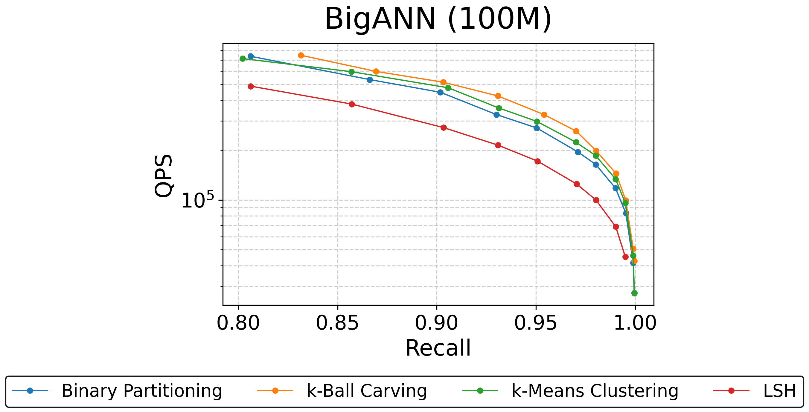
Backup: picking from the leaves


Bi-directed k-NN and MST both work.
Backup: k-NN degree in the leaves
Denser k-NN graph in the leaves → denser PiPNN index. Sweet spot for quality is between 2 and 4.

Backup: SymphonyQG — faster queries, same builds
- Fuses RaBitQ-style quantization into the graph layout (NGT-QG lineage): batch SIMD distance estimation during traversal, no re-ranking pass.
- State of the art on the query-time time–accuracy trade-off.
- It does not address construction cost — the axis this talk is about.
PiPNN · VecDB @ VLDB 2026